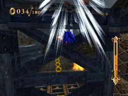
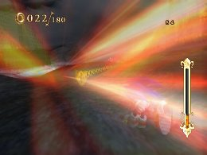
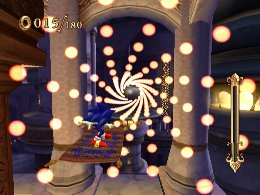
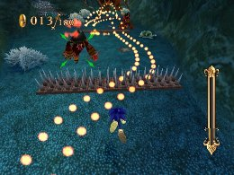
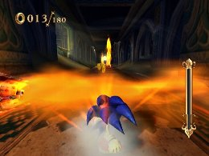
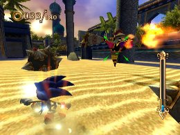
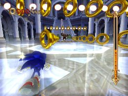
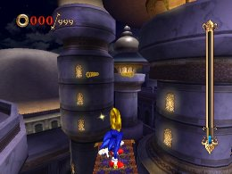
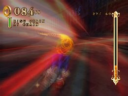
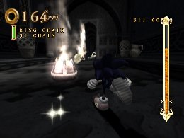

金メダルへの道 その３
上級者編
◆「ビート ザ クロック（○○秒以内に進め）」
「ヘッド トゥ ヘッド」と同様にストイックなタイムアタックを求められるミッションになります。
時間制限のあるミッションでは、基本的に通常ルートで進んでいくと時間ギリギリになることが多いですが、マップをくまなく探してみると、意外なところにショートカットが出来るギミックやルートが隠されている事が多いです。

◆「ノー パール（パールを取らずに進め）」
パールを１個でも取得してしまうと、即ミッション失敗になってしまう非常に繊細な操作を求められるミッションです。
当然「パールコレクター」系スキルは自分の首を絞めてしまうので、装備から外しておきましょう。
繊細な操作を求められますが、タイムアタックとなると、速さも重要な要素になってくるので、パールの位置を覚え、スピードを落とさずに駆け抜けるのがポイントになります。
パールは連なって配置されている事が多いので、見た目的にはパールで囲われたコースのような感じになっているので、視覚的にコースが取りやすくなっています。
ただ、後半のステージでは立体的に配置されているところもあり、小ジャンプを駆使しないと避けられない場所もあるので、操作感覚を体に染み込ませるしかありません。
諦めず、何度も繰り返して突破しましょう。

◆「パーフェクトチャレンジ（ダメージを受けずに進め）」
１度でもダメージを受けるとミッション失敗になる為、ミッションクリア自体も難しいです。
その中でもタイムを縮める為に高速で走り抜けなければならないので、さらに難易度は高くなります。
コースを覚える事はもちろんですが、これまでに培ってきた総合的な操作技術も求められます。
スキルの「イージススライダー」を装備して、嫌らしいトラップを回避し、少しでも操作の負担を軽減させましょう。

◆「ハンド オフ（リング０個でゴールへ進め）」
リングを取ってもすぐにミッション失敗にはならず、ゴールに到達した時にリングがゼロの状態であればクリア可能であるため、リングをいくら取っても、マジンやギミックで意図的にダメージを受けてクリアした方が速いように感じます。
しかし、ダメージを受けるポイントを誤ったり、ダメージを受けている時間がタイムロスになるので、出来ればリングを取らずにクリアしたいところです。
これも「ノー パール」ミッション同様にリングの配置を覚えるのが近道ですが、どうしても取らずにクリアが難しいのであれば、少々裏技的ではありますが、「リングエクスチェンジ」を装備すると、リングを気にせず走れるので、マジンや障害物に気を付けるだけで、楽に金メダルが取れると思います。

◆「チェイン オブ リングス（リングチェインを○○チェイン決めろ）」
「コレクト リング」と同じようなミッションに見える為、「リングボーナス」が有効そうに見えますが、リングチェインには所持リング数はカウントされないので、クリア目的で装備しても効果がありません。
応用編でも記載されている通り、「スピードブレイク」で一気に連続取得する、「タイムブレイク」で時間を遅くしリングの取り逃しを防ぐといった流れは有効です。
また、リングチェインのミッションでもリッチリングが登場する事がありますが、チェイン数カウントは２０ではなく、普通のリングと同じ１なので、無理にリッチリングを取りに行く必要はありません。
確実に繋がるルートを探し、規定枚数に達する直前にスピードを落としてしっかりとチェインを切ることで、金メダルの道は開かれるでしょう。

スーパープレイ
スケルトンドーム
ノー パール パールを取らずに進め
スタート直後、左から進むルートを使用して攻略しています。
【装備スキル一覧】
チャージャー オールラウンダー クイックメガステップ スーパークイックエア ワープブースト ハイパースピードアップ ランディングブースト ファイヤータックル キャンセルブースト ファイヤーゲイズ スプラッシュジャンプ ロケットジャンプ Ｈメガエキスパンズ ホーミングリカバリー クイックジャンプ イージススライダー ハイパースキマー
ナイトパレス
パーフェクト チャレンジ ダメージをうけずに進め
回転する部屋の後半部分にある階段状の段差を円柱に向かって小ジャンプして一気に越えます。
【装備スキル一覧】
チャージャー オールラウンダー クイックハイステップ クイックエア ワープブースト ハイパースピードアップ ランディングブースト ファイヤータックル キャンセルブースト ファイヤーゲイズ スプラッシュジャンプ ロケットジャンプ Ｈメガエキスパンズ ホーミングリカバリー エキスパートアタック クイックジャンプ イージススライダー ハイパースキマー ハイパーサージ ハードブレーキ Ｈパールコレクター リングボーナス ワープダッシュ エキスパートドリフト ホーミングボーナス チェインボーナス マッハグラインド クレストオブファイア
 RSS
RSS